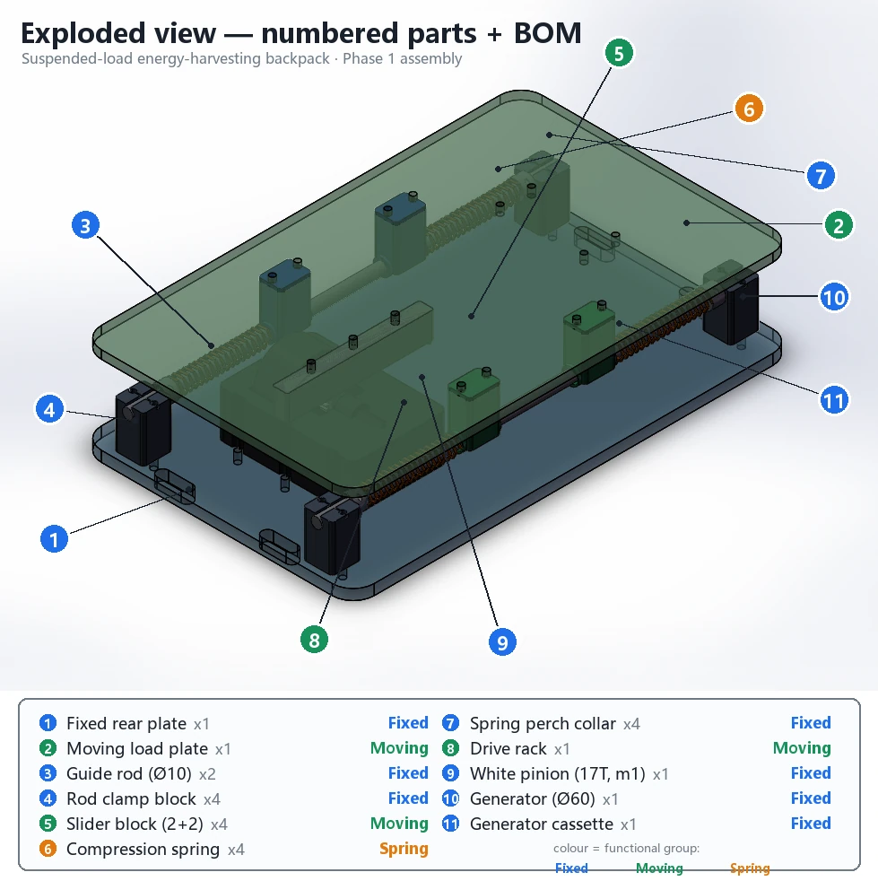
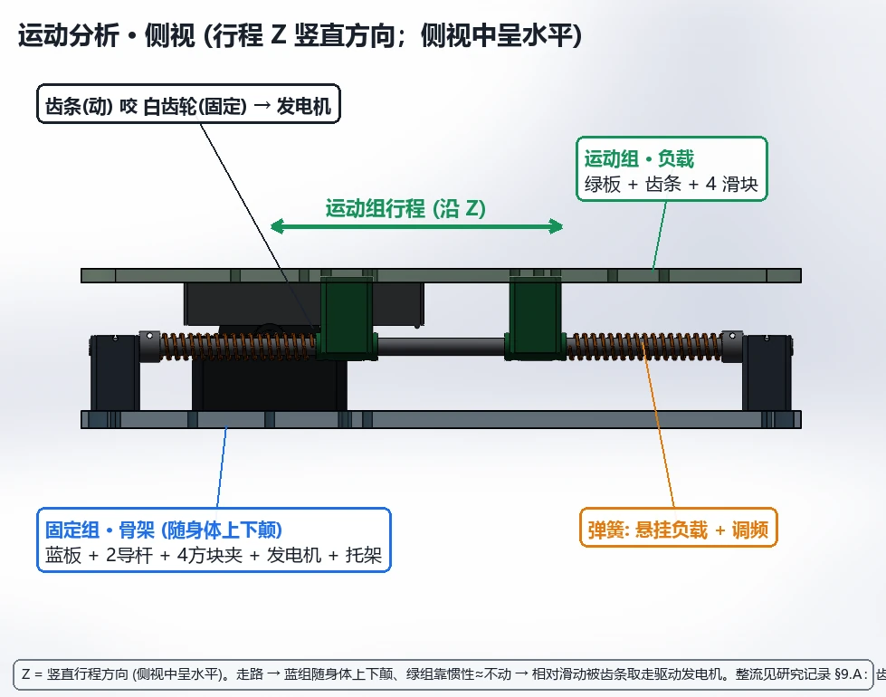
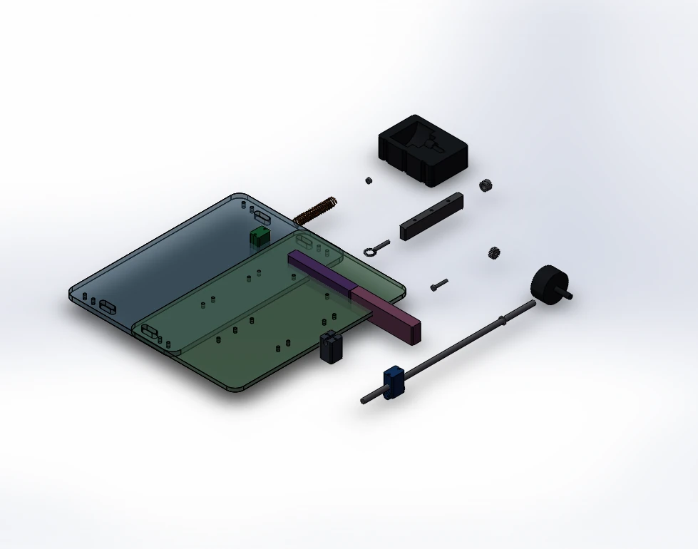

Supervised mechanical research · prototype in development
Suspended-Load Energy-Harvesting Backpack
I joined this University of Auckland research project after earlier students had explored suspended-load backpack mechanisms and the research group had developed a bidirectional rotating electromagnetic generator. My current task is practical: design a manufacturable outer platform that guides the payload, captures its motion relative to the wearer and gives the team a clear route into fabrication and testing.
Research Snapshot
Mechanism layout, SolidWorks assembly, manufacturing drawings, exports and build sequence.
Developed within the University of Auckland Mechanical and Mechatronics Engineering research group.
The generator belongs to the group's prior work; I do not present its design as my own.
Relative vertical payload motion is transmitted to the generator through a direct mechanical path.
Assembly, exploded BOM, motion views, drawings and DXF, STEP and STL exports.
Travel, friction, alignment, payload response and electrical output remain to be tested.

How the Mechanism Works
- The rear plate is fixed to the backpack frame and follows the wearer's torso.
- The front plate carries the suspended load and translates vertically on two guide rods.
- Walking creates relative motion between the fixed frame and moving load plate.
- A rack attached to the moving plate drives a pinion coupled to the group's existing generator.
- Four compression springs support the payload and set the mechanism's static position.
Work Completed So Far
Engineering Deliverables
- Reviewed the group's earlier student reports and separated prior generator work from the new mechanical platform.
- Built a modular SolidWorks assembly around a fixed rear plate and moving payload plate.
- Defined guide, spring, rack, pinion and generator-mount interfaces for the first prototype.
- Prepared an exploded view, bilingual BOM, motion views and manufacturing layouts.
- Exported plate DXFs plus STEP and STL files for fabrication review.
How the Work Moves Forward
This project depends on communication, not only CAD. I review mechanism choices with my supervisor and previous students, then speak with technicians in different university labs and workshops about cutting, printing, assembly access and practical tolerances. Their feedback becomes the next CAD revision or test.
Design Evidence


Verification Boundary
First Prototype Sequence
- Laser-cut the fixed and moving plates after technician review.
- 3D-print the guide blocks, spring seats and generator interface components.
- Assemble and measure free travel, friction, alignment and hard-stop clearance.
- Integrate the existing generator and confirm bidirectional transmission by hand.
- Add representative payloads and record displacement during controlled walking tests.
- Measure electrical output only after the mechanical motion is repeatable.
Native CAD and detailed research records are maintained within the active supervised project. Selected evidence is shown publicly here while the design is still being fabricated and reviewed.